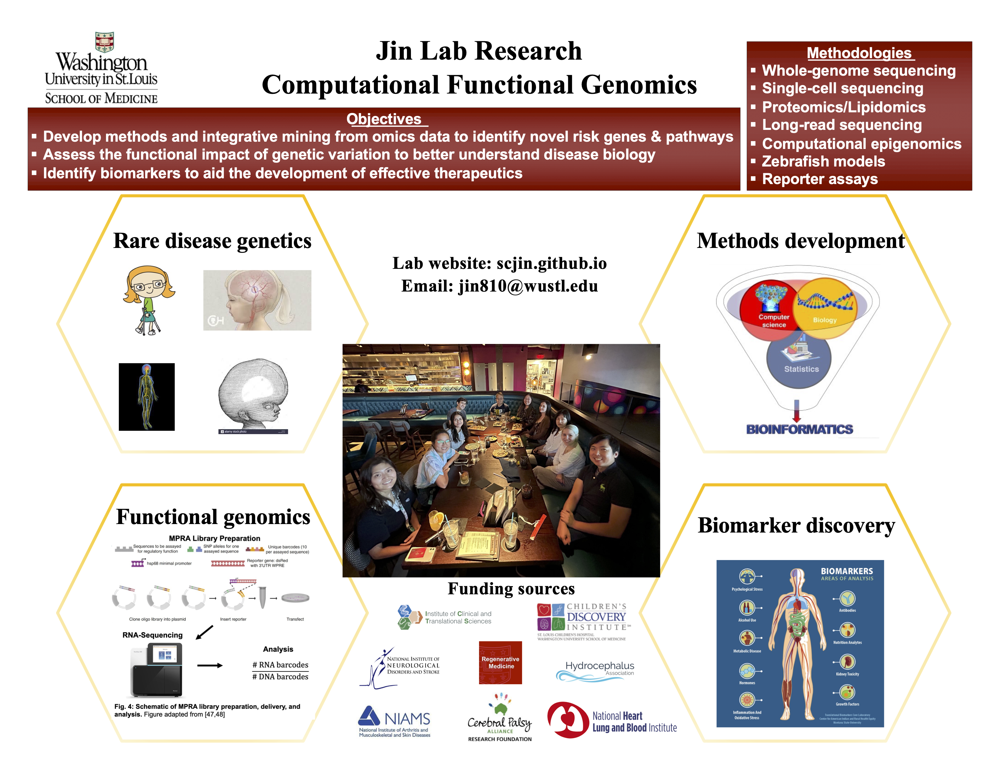

Welcome to the Jin group in the Department of Genetics and the McDonnell Genome Institute at the Washington University School of Medicine. Our mission is to provide meaningful and interpretable insight into disease biology, and define new targets for risk determination, prevention, and therapy. We are currently focusing on the formation, development, and application of human genetic, functional genomic, and bioinformatic methods to better analyze and integrate genome sequencing, single-cell RNA-sequencing, epigenomic, spatial genomic, and proteomic data. Through integration of diverse type of omics data and epigenetic functional annotations, the integrative genomic analysis will provide a better understanding of the molecular basis of cardiovascular diseases and neurological disorders. Following integrative genomic analyses, we use zebrafish and massively parallel reporter assays to precisely model human mutations.
We collaborate with clinicians, the Peripheral Neuropathy Research Registry, the Cerebral Palsy Research Network, and the WashU Undiagnosed Diseases Network to assemble thoroughly phenotyped cohorts for gene discovery. We also collaborate with experimentalists to design scalable high-throughput assays to model effects of disease-associated mutations. If you think any of this sounds cool consider joining us in working to make the world a better place.

These posters are meant to show that racial justice and support for marginalized communities cannot be separated from the practice of science. We must actively work to recognize the obstacles that scientists (and potential scientists) from marginalized communities face, and dismantle structures of power that prevent them from succeeding. We must also consider the effects of our research and research choices on marginalized communities. Please visit here for more diversity and inclusion lab posters!
We are currently working on the following areas of research:
Methods Development
During my postdoctoral training, we developed a control-free statistical approach and applied it to a whole-exome sequencing dataset of 2,871 congenital heart disease probands procured from the Pediatric Cardiac Genomics Consortium to demonstrate that ~1.8% of cases are attributed to rare inherited variants. First, we demonstrated that extremely rare transmitted variants in each gene are similarly distributed when compared to de novo mutations; this allowed for a robust estimation of the expected frequency of rare transmitted variants based on the expected frequency of de novo mutations. Second, analysis of recessive variants has been confounded by varying degrees of consanguinity among probands and differences in consanguinity between cases and controls. We conceived and developed a novel method of analysis using a simple polynomial model that accounts for this variable inbreeding, enabling a powerful test comparing the observed and expected recessive variants in each gene. Currently, I am working with Drs. Hongyu Zhao and Monkol Lek, to develop novel methods for large-scale genetic association analysis, joint modeling of de novo and transmitted variants, and polygenic risk prediction.
Unravelling Molecular Signatures and Novel Therapeutic Targets for Idiopathic Peripheral Neuropathy
Idiopathic peripheral neuropathy (IPN), a result of damage to the peripheral nerves with unknown causes, is a debilitating, painful, and as-yet-untreatable condition. Due to the unknown origin of the damage and the lack of targeted therapy, treatment for patients with IPN revolves around mere symptom management. In collaboration with Drs. Jeffrey Milbrandt, Ahmet Hoke, Aaron Di Antonio, and the Peripheral Neuropathy Patient Registry, we are integrating whole-genome sequencing and SOMAscan proteomic data in extreme IPN patients with negative clinical genetic screening results and performing bioinformatic analysis to identify variants, pathways, and biomarkers for pathophysiological clues to axon degeneration.
Genomic Research of Cerebral Palsy and Dystonia
In collaboration with Drs. Michael Kruer, Carlos Cruchaga, the Dystonia Coalition, and the Cerebral Palsy Research Network, we are applying an integrative, multidimensional omics approach to a large, well-phenotyped cerebral palsy/dystonia cohort to catalyze gene discovery, provide mechanistic insights into newly identified genetic causes, make genotype-phenotype correlations, and create a metadata ecosystem freely available to the cerebral palsy/dystonia community.
Human Genetics and Molecular Mechanisms of Human Neurological Diseases
In collaboration with Drs. Kristopher Kahle, Kristen Kroll, Joe Dougherty, and the WashU Undiagnosed Diseases Network, we are focusing on studying the genetic underpinnings of rare Mendelian forms of human neurological diseases, using whole-genome sequencing, quantitative phenotyping, transcriptomic profiling, massively parallel reporter assays, and in vitro/in vivo models.